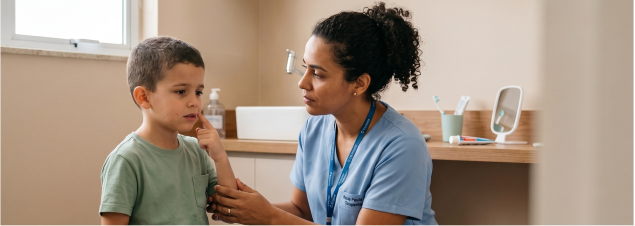

A prevenção é a melhor forma de manter a saúde bucal e evitar dor, infecções e procedimentos sob sedação.
• Dor ou desconforto bucal.
• Alterações na alimentação.
• Sangramento gengival.
• Mau hálito persistente.
• Mudanças comportamentais relacionadas à boca.
